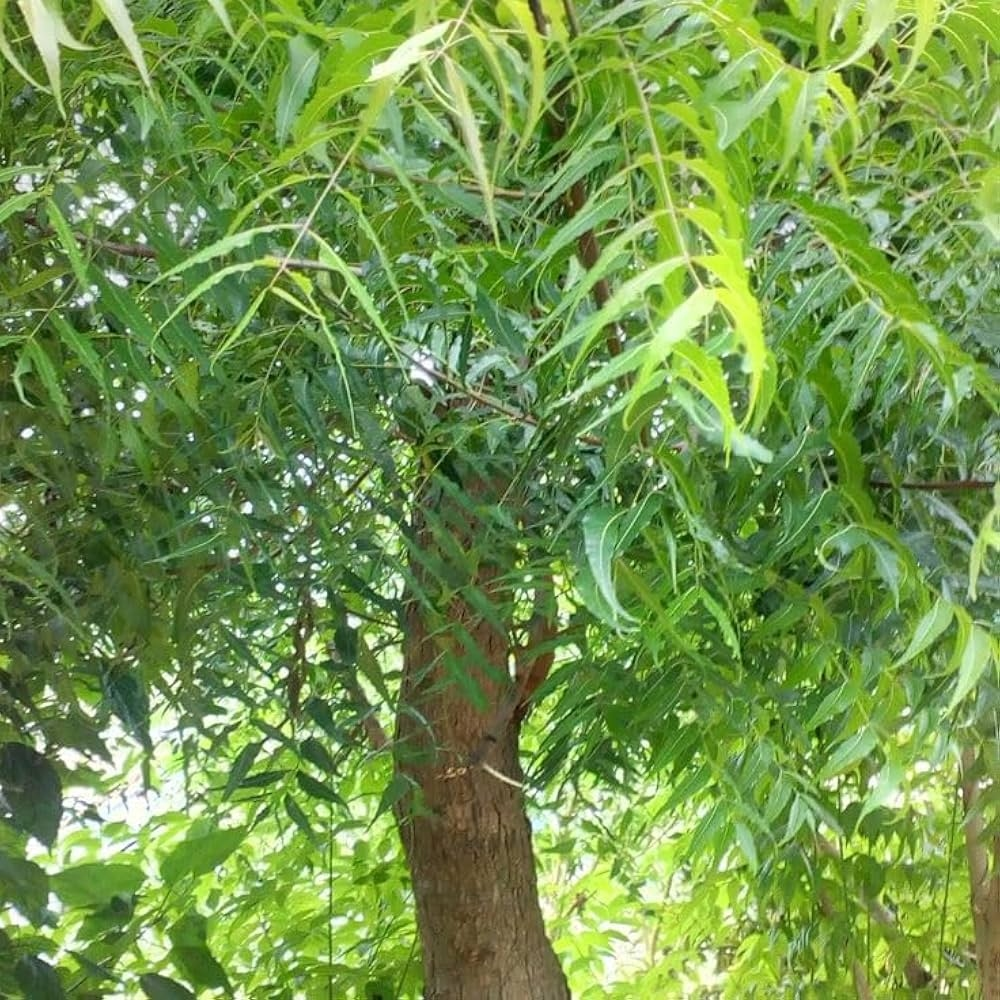

Scientific Name: Azadirachta indica
Common Names: Neem, Indian Lilac
Family: Meliaceae
Native Region: Indian Subcontinent
Plant Type: Fast-growing evergreen tree
Uses: Medicine, natural pesticide, skincare, agriculture
Details: Neem is a well-known medicinal tree famous for its antibacterial, antifungal, and antiviral properties. Almost every part of the tree including leaves, bark, seeds, flowers, and oil has traditional uses.
Neem leaves are commonly used in Ayurvedic medicine for treating skin problems, infections, and improving immunity. Neem oil is widely used in soaps, shampoos, cosmetics, and herbal products.
The tree is also valued in agriculture because neem-based products work as natural pesticides and help protect crops from harmful insects without damaging the environment.
Neem trees grow well in hot and dry climates and provide excellent shade. Because of its health and environmental benefits, neem is often called the "Village Pharmacy" in India.